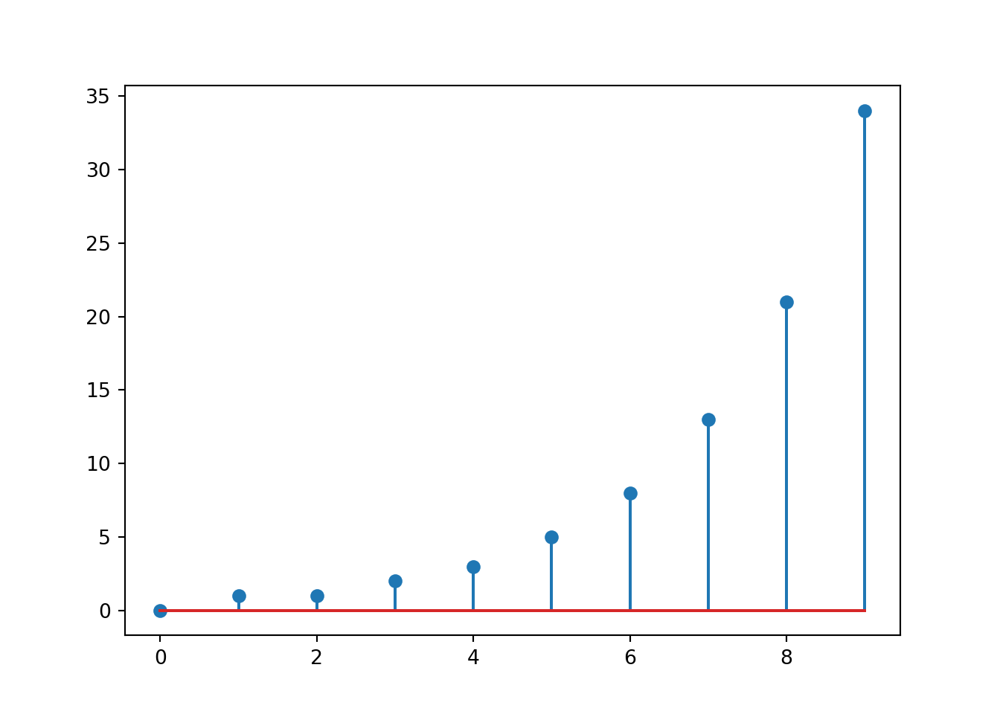
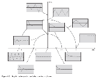
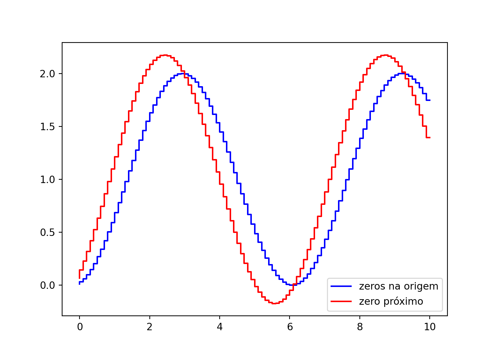
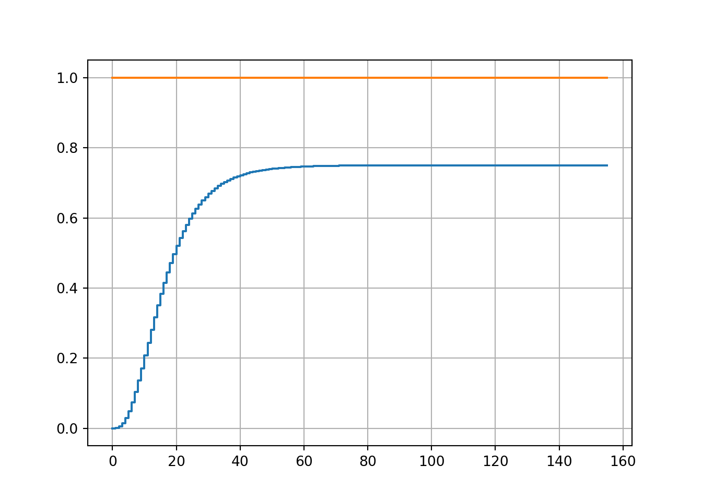

Capítulo 8 Análise dinâmica de sistemas discretos
8.1 Equações de diferenças
São análogas às equações diferenciais, porém ao invés de derivadas, utiliza deslocamentos de tempo na função de saída, p.ex.: \(y[k+1]\), \(y[k-2]\).
A resposta de uma equação de diferenças é uma sequência de valores que pode ser obtida resolvendo a equação analiticamente ou numericamente (mais fácil).
Um exemplo clássico é a equação de Fibonacci: \(y[k+2] = y[k+1]+y[k]\), com \(y[0]=0\), \(y[1]=1\). Experimente calcular.
import numpy as np
from matplotlib import pyplot as plt
y = np.zeros(10)
y[0] = 0
y[1] = 1
for k in range(len(y)-2):
y[k+2] = y[k+1] + y[k]
print('Sequência de Fibonacci: ', y)## Sequência de Fibonacci: [ 0. 1. 1. 2. 3. 5. 8. 13. 21. 34.]
A implementação dessas equações é trivial usando loops (estruturas de repetição) computacionais. É desta forma que implementamos um algoritmo de controle dentro de um programa.
Equações de diferenças representativas de sistemas reais podem surgir basicamente de duas formas:
(a) Da discretização do sistema contínuo (equivalente discreto)
(b) Da identificação do sistema contínuo usando regressão linear (identificação de sistemas)
8.2 Função de transferência discreta
O procedimento para encontrar a função de transferência discreta é o mesmo aplicado a equações diferenciais, apenas atentando para a propriedade
\[\mathcal{Z}\{y[k+1]\}=zY(z)\]
ou
\[\mathcal{Z}\{y[k-1]\}=z^{-1}Y(z)\]
Exemplo: \[\begin{align} y[k+2] + 10y[k] = 8x[k-1] \end{align}\]
Aplicando a transformada \(\mathcal{Z}\) \[\begin{align} z^2Y(z) + 10Y(z) &=8z^{-1}X(z)\\ (z^2+10)Y(z) &= \frac{8X(z)}{z}\\ \frac{Y(z)}{X(z)} &= \frac{8}{z(z^2+10)} \end{align}\]
Da mesma forma que o caso contínuo, definimos para funções de transferência discretas: - Pólos: raízes do denominador - Zeros: raízes do numerador
As características dos pólos do sistema definem que tipo de resposta ele vai apresentar.
8.3 Estabilidade
- O sistema é estável se todos os pólos estão dentro do círculo unitário \(|z|<1\)
- O sistema é instável se um ou mais pólos estão fora do círculo unitário \(|z|\geq 1\)
8.4 Tipo de resposta
- Sobre amortecida (\(\xi>1\)): pólos reais e distintos
- Criticamente amortecida (\(\xi=1\)): pólos reais e iguais
- Sub amortecida (\(\xi<1\)): pólos imaginários conjugados estáveis
- Oscilatória (senoidal pura): pólos imaginários em cima do círculo \(|z|=1\)
- Alternante (oscila, mas não senoidal): pólos reais negativos
- Integrador: \(z=1\)

Simulações para ilustrar.
Define pólos no domínio \(s\) para nos situarmos
s1 = np.array([-1,-5])
s2 = np.array([-1,-1])
s3 = np.array([-1+1j, -1-1j])
s4 = np.array([1j, -1j])Mapeamos estes pólos para o plano \(z\), usando a relação fundamental entre \(s\) e \(z\).
Construímos algumas funções de transferência agora. Repare que usaremos apenas um conjunto de pólos (experimente outros por conta própria)
num1 = [1,0,0]
num2 = np.poly([.85,0])
den = np.poly(z4)
H1 = ct.tf(num1,den,T)
H1 = H1/H1.dcgain() # Isto é feito para garantir que o ganho DC será 1
H2 = ct.tf(num2,den,T)
H2 = H2/H2.dcgain()As duas funções de transferência foram definidas com zeros ligeiramente diferentes, para ver também sua influência.
Relatório de pólos discretos
## Eigenvalue (pole) Damping Frequency
## 0.995 +0.09983j -5.551e-16 1
## 0.995 -0.09983j -5.551e-16 1## [0.+0.j 0.+0.j]Simulação de resposta ao degrau.
t,y1 = ct.step_response(H1,10)
t,y2 = ct.step_response(H2,10)
plt.step(t,y1,'b',t,y2,'r');
plt.legend(['zeros na origem','zero próximo']);
plt.show();
8.5 Ganho DC
Para um sistema contínuo sem pólos na origem, o ganho DC é o valor da função de transferência quando \(s\rightarrow 0\).
O ganho DC informa o quanto a saída vai aumentar ou diminuir em relação à entrada, quando esta é um sinal constante.
O ganho DC discreto possui a mesma interpretação, mas devido ao mapeamento no plano \(z\), ele é definido como o valor da função de transferência quando \(z\rightarrow 1\).
Exemplo:
\[G(z) = \displaystyle \frac{0.0009(z+1)^2}{z(z-0.9)(z-0.8e^{j0.1})(z-0.8e^{-j0.1})}\]
Como todos os pólos são estáveis:
\[\begin{align} G(z) &= \frac{0.0009 \left(z + 1\right)^{2}}{z \left(z - 0.9\right) \left(z - 0.8 e^{- 0.1 i}\right) \left(z - 0.8 e^{0.1 i}\right)}\\K_{dc} &= \frac{0.036}{\left(1 - 0.8 e^{- 0.1 i}\right) \left(1 - 0.8 e^{0.1 i}\right)}\\K_{dc} &= 0.750104 \end{align}\]
Usando o pacote “control”
num = 9e-4*np.poly([-1,-1])
den = np.poly([0,0.9,0.8*np.exp(0.1j),0.8*np.exp(-0.1j)])
Gz = ct.tf(num,den,1) # Período de amostragem não foi dado, então usamos 1
print('Ganho DC: ', Gz.dcgain())## Ganho DC: 0.7501041464106208Simulação para visualizar interepratação física
from matplotlib import pyplot as plt
t,y = ct.step_response(Gz)
degrau = np.ones(t.size)
plt.step(t,y,t,degrau);
plt.grid()
print(y[-1])## 0.7501039766960299
Quando o sistema possui um ou mais integradores, o ganho DC é calculado da mesma forma, porém removendo os integradores. A interpretação nesse caso é diferente, por ele mede o erro não mais em relação a um degrau, mas a uma entrada equivalente ao número de integradores (rampa, parábola, etc.)